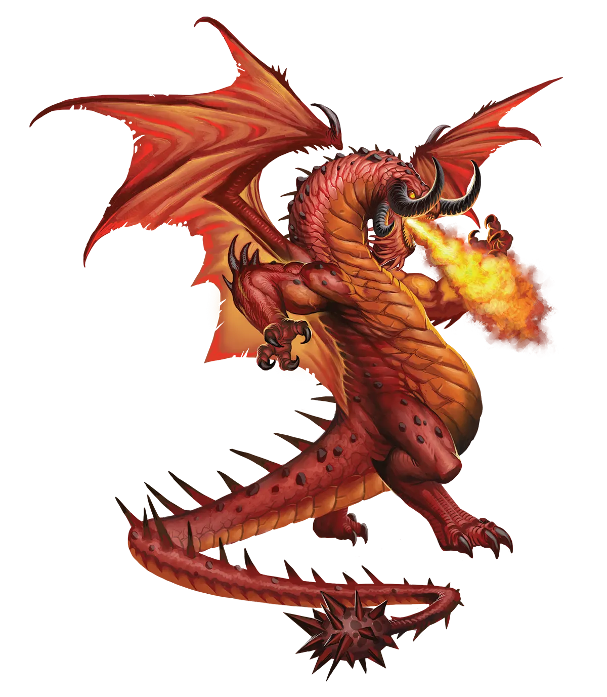
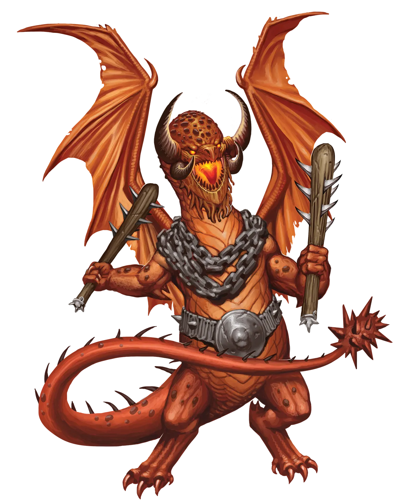

细节中的魔鬼
亲爱的读者，你可能会好奇，既然与炼狱龙交易最终总是以悲惨收场，为何人们还是不断与它们交易。答案比你想象的要平淡得多，你不过是听多了关于炼狱契约出错的恐吓故事：事实并非如此。并非总是如此。有时，是的，签约者确实会遭遇灾难，甚至可能常常如此。但如果你能留心细节，你完全可能与炼狱龙达成互利共赢的安排。这并不意味着龙不会从其想要的东西中得利，但你也可能如愿以偿，而没有致命的隐藏陷阱。
炼狱龙 Infernal Dragon |
|
|
炼狱龙热爱达成交易与协议，以非同寻常的代价换取收获。它们通常更习惯于站在交易中提供的一方，以满足凡人的欲望来换取服务、恩惠或更多。然而，永恒之光仪式是一个谜一般的交易，它从接受交易者的角度来呼唤炼狱龙的注意。炼狱龙们思考着如何操纵这个体系，以最低的自身成本从仪式效应中获得最大收益。最终，许多炼狱龙选择不接受这笔交易；它们见过太多交易以失败告终。但也有许多炼狱龙寻求在最有利的条件下进行仪式，以抢占先机。例如，它们可能会寻找一位身患绝症或不治之症的凡人，并谈判出高昂的代价，以终身服务与财富换取永恒之光仪式所带来的奇迹治愈。在它们最虚弱的时刻拥有一位强大的盟友，或是拥有购买额外防护物品的财富，可能决定着关键早期阶段的成败。而如果它们能挺过这些阶段，它们的力量与影响力只会与日俱增，直至迅速超越过往的能力，成为真正的强权玩家。传统派炼狱龙往往对永恒炼狱龙投以侧目，就像毒贩听说竞争对手竟对自己供应的货上瘾时摇头叹息一样。在契约、交易与神秘仪式的行当里，传统派炼狱龙心想，最好别把水搅浑。 永恒炼狱龙试图为其事业聚拢众多盟友，组建冒险团体甚至更大的联盟，以保护自身，并在借助永恒之光仪式迅速崛起的过程中获得协助、恩惠与服务。理想情况下，所有这些盟友都欠着炼狱龙的恩情、服务与臣服。然而，具有某些特定个性类型的盟友并不吃这一套。与这类盟友打交道时，以蜜相诱远比以醋相逼更容易；让他们相信自己更像是炼狱龙的平起平坐者或伙伴，甚至以友相待，并尽可能建立真正的相互友谊，以巩固纽带、赢得忠诚。毕竟，永远会有无数卑躬屈膝的群众甘愿在炼狱龙的威势面前自贬身价，但能够与龙并肩作战的强大盟友却少之又少。因此，值得走出龙的舒适区，以尊重对待这些盟友，以经营这段关系。那些通过交易永恒之光仪式的治愈之力而获得强大盟友的炼狱龙，等于是中了头奖，因为这个盟友可以帮助它们度过加速其迅速增长的魔法力量的最初几步。永恒炼狱龙偏好那些有助于它们花言巧语和讨价还价的有魅力职业，如吟游诗人或游荡者，不过魔契师也是它们的最爱之一。 细节中的魔鬼 亲爱的读者，你可能会好奇，既然与炼狱龙交易最终总是以悲惨收场，为何人们还是不断与它们交易。答案比你想象的要平淡得多，你不过是听多了关于炼狱契约出错的恐吓故事：事实并非如此。并非总是如此。有时，是的，签约者确实会遭遇灾难，甚至可能常常如此。但如果你能留心细节，你完全可能与炼狱龙达成互利共赢的安排。这并不意味着龙不会从其想要的东西中得利，但你也可能如愿以偿，而没有致命的隐藏陷阱。 炼狱龙特质 Infernal Dragon Traits 你出身于一脉专横霸道的契约掮客――炼狱龙世系。 |
  |